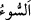

kavmi olan İsrailoğulları’na şu sözü söylediği vakti insanlara hatırlat.’ Vakitlerin
hatırlatılması demek, bu vakitlerde meydana gelen olayların hatırlatılması demektir.
Çünkü vakitler bu olaylara sahne olduğu için bunlar hatırlatılınca içlerinde meydana
gelen olaylar da gözle görülüyormuşçasına hatırlatılmış olmaktadır.
“Allah’ın üzerinizdeki nîmetini hatırlayın. O sizi Fir’avn âilesinden kurtardı.”
Yâni sizi Fir’avn’dan ve onun peşinden giden dindaşları Kıptîler’den kurtardığı zaman
size olan nîmetini hatırlayın.
“Onlar sizi işkencenin en kötüsüne sürüyorlar” Bu cümle, ya onların kurtarılışlarını
açıklayan bir başlangıç cümlesidir ya da Fir’avn soyunun hâlini beyan etmektedir.
Tehzîbü’l-masâdır’da denilir ki: “es-sevm” azâb ve horluğu tatmak demektir.
Bahru’l-ulûm’da şöyle denilir: “Onlar size, en şiddetli azâbı tattırıyorlar ya da en
şiddetli azâbı arayıp sizi ona dûçâr etmek istiyorlardı.”
et-Tibyân’da belirtildiği üzere “
” bütün âfetleri içine alan genel bir tâbirdir.
Buradaki maksad, her cins kötü azabdır ya da İsrailoğulları’nın köleleştirilmesi,
meşakkatli işlere koşulması, hafife alınması ve bunlara benzer daha nice işkencelerdir
“Ve” doğan “oğullarınızı kesip” Bu ifâde, özel bir durumun genel bir duruma atfı
kabilindendir. Erkek çocukların kesilmesi hâdisesi son derece şiddetli, korkunç bir
davranış olduğundan ve işkencenin sınırlarını da aştığı için sanki azabdan başka bir şey
olarak değerlendirilmiştir.
Fir’avn taraftarları, İsrailoğulları’nın erkek çocuklarını öldürüyorlardı. Çünkü
Fir’avn rüyasında Beytü’l-makdis tarafından bir ateşin gelip Kıptîlerin evlerini
yaktığını, İsrailoğulları’nın evlerini ise yakmadığını görmüş, kâhinler de rüyayı
‘Onlardan bir erkek çocuk doğacak ve senin helâkin ve mülkünün zevâli onun yüzünden
olacak.’ diye yormuşlardı. Bunun üzerine Fir’avn da paçaları sıvamış, bir takım
tedbirler alarak ilâhî hükmü savmak ve ortaya çıkmasını engellemek istemişti. Oysa
Allah nûrunu muhakkak tamamlar.
Kırlangıç kuşu ki kartal ile cenk eder,
Aslında kendi kanadını kendi kanıyla boyar.
“Kadınlarınızı sağ bırakıyorlardı.” Yâni kadınlarınızı ve kızlarınızı câriye yapmak
ve hizmetlerinde kullanmak maksadıyla hayatta bırakıyorlardı. Kadınları da eşlerinden
ayırıyorlardı. İşte bu, en büyük zarar ve ibtilâlardandır. Çünkü helâk olmak bile bunun
yanında daha basit kalmaktadır.
“Bunda” Fir’avn soyunun zikredilen korkunç tutumlarında “Rabbinizden size büyük
bir imtihan” dayanılmaz büyük bir sıkıntı “vardı.”
Şâyet “İsrailoğulları’na: Fir’avn âilesinin fiili nasıl onlara Rablerinden bir imtihan
oldu?” diye sorarsan şöyle cevap veririm: Cenab-ı Hakk’ın Fir’avn âilesine bu gücü
vermesi, yaptıklarını yapabilecek mühleti onlara tanımış olması, Allah’tan bir
imtihandır. Ancak, işâret edilen şeyin bundan kurtarma, nîmetle imtihan ve denenme